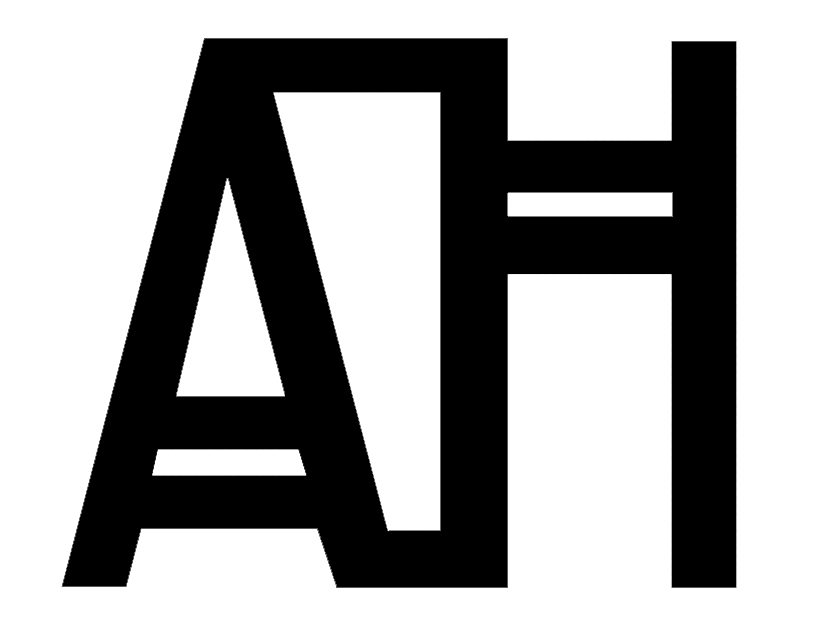

Außenwinkel
Corner brackets, placed from the geometry of each wall
Exterior core walls need corner brackets along their length, positioned around columns and windows and never further apart than a set maximum. This add-in works out which side of each wall faces inward, at any angle, and builds the bracket positions from rules: fixed starts at the wall ends, positions at column and window edges, then an even fill of the gaps. All placed brackets are grouped, and the processed walls are isolated in the view for checking.
The placement rules
From geometry to placement
- Inward normal: cast a 2D ray to both sides of each wall against its neighbours on the same level. Hit count and distance decide which side is inside. Isolated walls fall back to the building centroid.
- Placement line: offset the centerline inward by half the wall thickness, plus a level-dependent offset.
- Trim: shorten the line at every intersecting wall on the same level.
- Seed positions: 350 mm from both ends, 60 mm plus half the cross-section at columns, and half the opening width either side of windows.
- Fill: subdivide gaps longer than 1250 mm, then sort and de-duplicate.
- Place: one bracket at every position, rotated to face inward.
Design decisions
Any wall angleRay casting finds the inside without assuming walls are orthogonal.
Built for checkingGrouped output and isolated walls make the result quick to review.